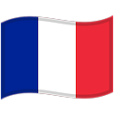

Informations
Editeurs : 2K Games.
Développeurs: Irrationnals Games.
Genre: FPS - Aventure
Thèmes: Fantastique - Steampunk.
Classification: + de 18 ans.
Modes : Solo uniquement.
Date de sortie : 31 Août 2007.
Langage: 
Description
Assassin's Creed IV : Black Flag est un jeu d'action / aventure. Le joueur y incarne Edward Kenway, un pirate sans foi ni loi qui terrorise les Caraïbes au XVIIIème siècle. Sur son navire, le Jackdaw, il peut explorer librement une aire allant de la Floride à la Jamaïque en passant par Cuba et s'attaquer aux convois en quête de butins. La visite de villes comme La Havane ou Kingston sont également au programme, tout comme un mode multijoueur compétitif ou coopératif.